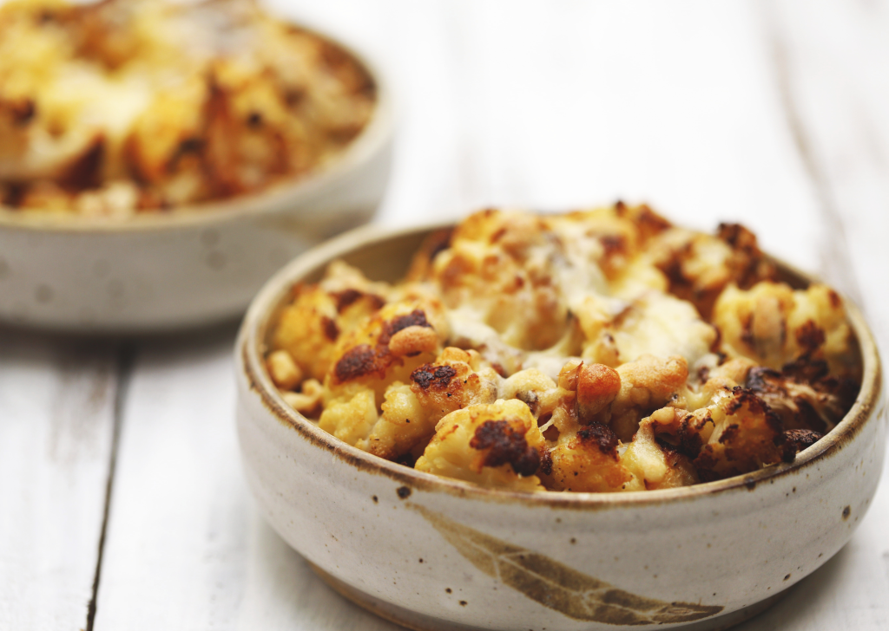

Luxury cauliflower cheese
My husband used to say that the only purpose of cauliflower was as a vehicle for cheese sauce. Given his childhood memories of soggy cauliflower cooked in the pressure cooker – limp, transparent and almost tasteless – it has taken me some time to excite him about the wonders of cauliflower when it is roasted, grilled and used in warm salads.
I made this recipe to revisit the principal treatment of cauliflower from my childhood, served with lashings of thick cheese sauce, but I wanted to make it something more luxurious and unctuous. So, no bechamel sauce, just double cream, roasted cauliflower, walnuts and some strong cheddar cheese. We scarfed it down for dinner and vowed to make this our go to winter comfort food. Hope you do too.
Ingredients: (serves 4 as a side dish and 2 as a main)
- 1 head of cauliflower, broken into medium-sized florets
- 1 tablespoon olive oil
- sea salt and freshly ground black pepper
- 2 sprigs fresh thyme
- 1/3 cup walnuts, chopped into small pieces
- 160 ml double cream (my favourite is Maleny Dairy)
- 40 g strong cheddar, grated
Preheat oven to 180 C. Place the cauliflower in a single layer on a baking tray and drizzle over the olive oil. Season well with salt and pepper and bake for 35-45 minutes, until the cauliflower is a dark golden brown, turning once during the cooking time. It’s fine for there to be a few charry bits; this is what gives the cauliflower amazing flavour. In one medium-sized or 2 smaller baking dishes that can be taken straight to the table, place the roasted cauliflower, piling up a little if needed. Scatter over the walnuts and the thyme leaves. Dollop the cream into the middle of the cauliflower and sprinkle over the grated cheese. Bake for 15 minutes until the cheese is melted and the cream transformed into an oozy, bubbling sauce. Serve while it is piping hot.